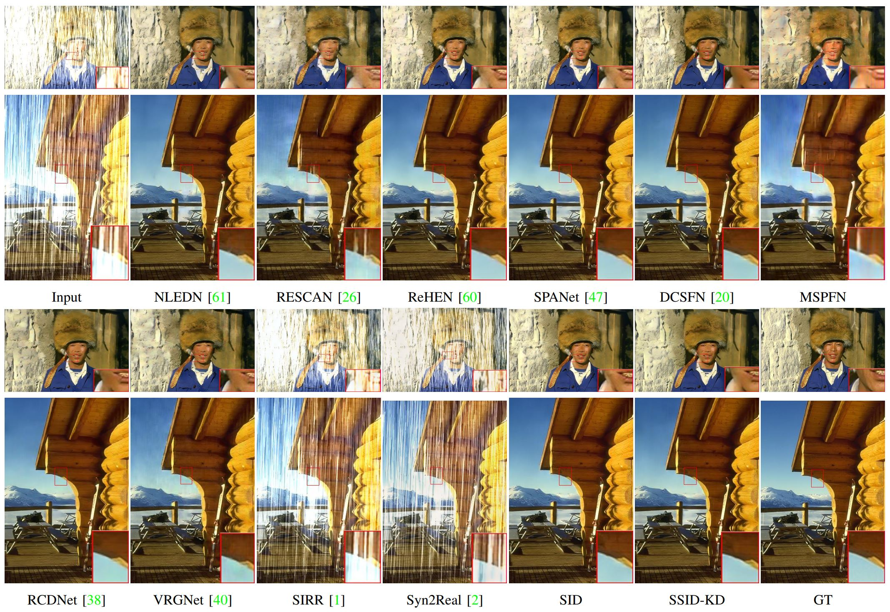
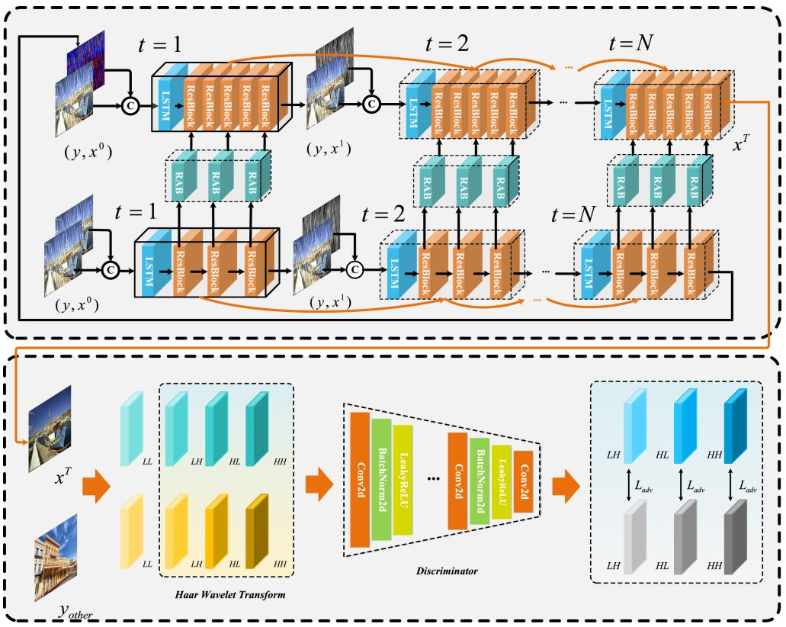

Biography
I work as a computer vision engineer in Intel China Research Center Co., Ltd currently. Before that, I received my Master degree from College of Intelligence and Computing, Tianjin University, China, in 2022,
under the supervision of Prof. Dongwei Ren and Prof. Pengfei Zhu.
And I received my Bachelor degree from College of Computing Science and Technology, China University of Mining and Technology, China, in 2019.
Research Interest
- Deep single image restoration
- Camera pipeline
Selected Publications
|  |
Semi-supervised Image Deraining Using Knowledge Distillation
Xin Cui, Cong Wang, Dongwei Ren, Yunjin Chen and Pengfei Zhu
IEEE Transactions on Circuits and Systems for Video Technology (TCSVT), 2022.
[Paper]
[Pytorch Source Code]
[BibTex]
|
|  |
Semi-supervised Single Image Deraining with Discrete Wavelet Transform
Xin Cui, Wei Shang, Dongwei Ren and Pengfei Zhu
The Pacific Rim International Conferences on Artificial Intelligencei (PRICAI), 2021.
[Paper]
[PyTorch Source Code]
[BibTex]
|
Intership
NVIDIA Semiconductor Technology (Shanghai) Co., Ltd 2021/10/08 - 2021/11/15
- Position: Software Testing Intern
- Job Content:
- GPU Software testing and test automation improvement for NVIDIA Deep Learning Software products, such as cuDNN,
TensorRT, NVIDIA optimized Frameworks (E.g. TensorFlow, PyTorch, MxNET, etc). Be responsible for functionality, and
performance tests in DLSW stack release. Work with development teams to triage issues, root cause analysis, verify fixes,
define new tests, improve test plans.
CASIC 706 (Beijing Institute of Computer Technology and Application) 2021/03/02 - 2021/07/15
- Position: Software Development Intern
- Job Content:
-
The configuration of Python interpreter, OpenCV, OpenGL piglit environment by using source code on Neokylin Linux.
Extended Sikulix functionality with distributed multi-machine collaborative extension achieved indepently by Python and
Java
Awards
- Second-class Academic Scholarship for Master Students of Tianjin University, 2021
- Second-class Academic Scholarship for Master Students of Tianjin University, 2020
- Academic Scholarship for New Graduate Students of Tianjin University, 2019
- Outstanding Undergraduate of China University of Mining and Technology, 2019
- Excellent Undergraduate Graduation Project of China University of Mining and Technology, 2019
- The Third Prize of Huawei Cup Program Design Competition, 2018